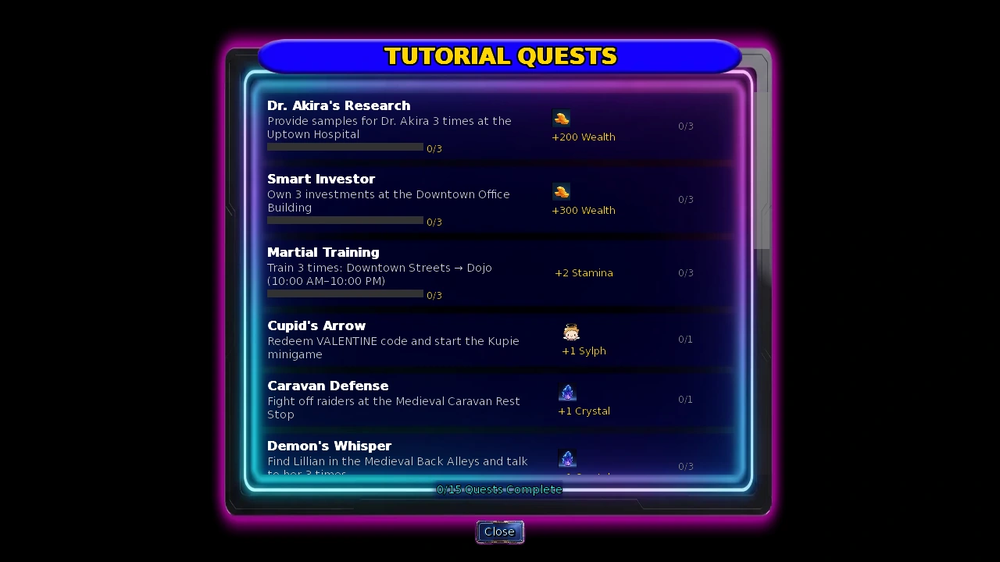
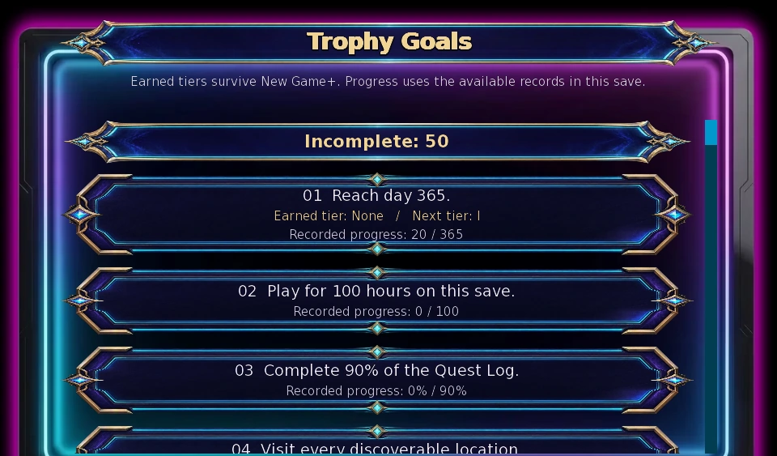
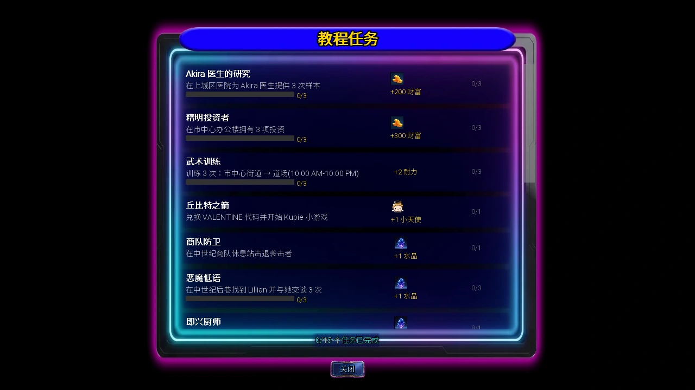
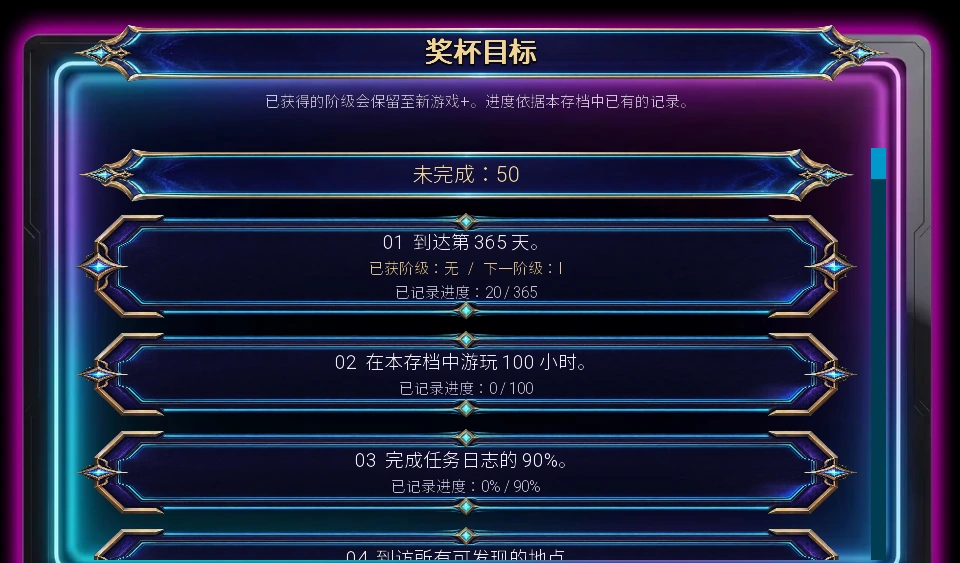

Select a screenshot to enlarge it. Screens show example inventories and progress.
Three different kinds of goals
The game has several useful progress views. Tutorial Quests provides fifteen concrete early-game tasks with claimable rewards. The Notebook’s Quest Log tracks story and character content. The Sanctum’s Trophy Goals lists fifty long-term award goals. They do not share a single reward pool: completing a trophy does not automatically award the money or Crystals shown by an unrelated tutorial.
Use the tutorial panel when you want a short next step, the Quest Log when you want to find unfinished content, and Trophy Goals when you want a collection or challenge target. For ordinary repeatable activities, use each system’s own guide; repeating an activity only advances the counters and rewards it actually supports.
Open the tutorial panel and claim rewards
While tutorial quests remain unfinished, select the quest icon near the bottom of the normal game screen. The panel shows a task, its progress, reward and claim state. Progress can be recorded while you play; you do not need to keep the panel open. Meeting a condition and claiming its reward are separate steps. Return to the panel and use the claim control for each completed task.
There is no single shared time price for a tutorial quest: hospital visits, training, travel, combat and purchases retain their normal costs. The panel itself is a progress and reward view. Once all fifteen rewards are claimed, it grants the additional 3-Crystal completion bonus and the tutorial icon finishes its job.

All fifteen tutorial tasks
| Task | Requirement | Reward |
|---|---|---|
| Dr. Akira’s Research | Provide research samples three times at the Uptown Hospital. | $200 |
| Smart Investor | Invest in three different companies; three levels in one company do not count as three investments. | $300 |
| Martial Training | Train three times at the Dojo, reached from Downtown Streets; open 10:00–22:00. | +2 Stamina |
| Cupid’s Arrow | Unlock Kupie’s Love Training and start the minigame. Follow its access guide. | +1 Sylph |
| Caravan Defense | Fight off the raiders at the Medieval Caravan Rest Stop. | 1 Crystal |
| Demon’s Whisper | Find Lillian through the Medieval Back Alleys and talk to her three times. | 1 Crystal |
| Improvised Chef | Learn Creative Cooking at the Unregistered Housing Complex in the Future Fringe Zone. | 1 Crystal |
| Kindred Spirit | Reach Close Friend with Sashina. | +3 Mystic |
| Crypt Clearer | Defeat ten enemies in the Catacombs beneath the Monastery. | +1 Strength, +1 Ability |
| Brothel Baron | Acquire the Brothel. Choosing its later operating mode is a separate decision. | 1 Crystal |
| Bug Collector | Discover ten different caterpillar or moth species. | 5 Comet Moths |
| Angler’s Progress | Catch ten different fish species. | $400 |
| Forged in Fire | Raise your melee weapon to level 3. | +2 Strength |
| Fashion Forward | Raise your casual outfit to level 3. | +2 Attractiveness |
| Maid Mentor | Raise any Brothel maid to level 3. | Master Mop |
The four individual Crystal rewards plus the final three-Crystal bonus total 7 Crystals. Smart Investor counts different companies with an investment level above zero. Collection tasks count different species, not ten duplicate catches. A relationship task needs the specified stage; check the relationship screen rather than using an approximate number of conversations.
Use the Quest Log without exposing every plot
Open the Notebook and select page 10: Quest Log. Its header shows completed entries and overall completion. Use All / Story / Characters / Other to narrow the list. The character search filters character groups by name; open the group you need rather than expanding every later storyline.
The log combines main-story entries, character routes and other content. A listed entry can still require its normal location, time, relationship stage, earlier scene or content access. A completed label is a record of completion, not a promise that its reward can be claimed again. Where the game offers a replay, replaying is also separate from progressing the live timeline.
For the Sanctum’s 90% Quest Log goal, the underlying completion must really be at least 90%. A rounded header that appears to say 90% can be slightly below the threshold. Finish another entry if the goal has not yet registered. The required count depends on the current content list, so this guide does not promise a fixed total of objectives for every save.

Statistics are records, not a second quest list
The Notebook’s page 7: Player Statistics shows cumulative activity records used by several goals. Page 2: Guilds, Fishing & Bar Games provides those systems’ summaries, including Vera’s game records. Their totals explain progress, but do not themselves pay every achievement reward.
The bar-game reset control clears the displayed win/loss and money totals for Vera’s four games. If you are still working toward her $50,000 trophy, resetting those totals removes the current evidence used by that goal. An already earned Sanctum tier remains earned. For the trophy, add winnings from all four games; losses are tracked separately and are not subtracted from the required $50,000.
Find Trophy Goals in the Sanctum
The Sanctum’s Trophy Goals action opens a read-only view of all fifty goals. It takes 0 minutes and shows completed/incomplete totals, earned tiers and the next available target. Open it through the Sanctum’s normal action list. Sanctum access is separate from earning a record; after Proficiency Upgrade, use Enter Sanctum from the corresponding enhanced bedroom when you have the required access.
Goals can be recorded while you play; you do not need to stand in the room for the action to count. The panel displays progress when the available save records support a useful counter. Some collection or story goals are simply incomplete/complete. A trophy with several tiers keeps its highest earned tier, and reaching a later tier replaces its lower presentation.
Trophy Goals describes the award conditions; it is not a shop or a universal reward-claim button. Refer to an activity’s own screen for spendable rewards. The reference below omits the narrative detail of one late-story goal and gives only the mechanically relevant route requirements for date goals.

Optional reference: all fifty trophy goals
Show the full mechanical checklist
| # | Goal | Condition |
|---|---|---|
| 1 | Days survived | Reach day 365 / 1,000 / 2,500. |
| 2 | Save playtime | 100 hours of tracked playtime in this save. |
| 3 | Quest Log | At least 90% actual completion; the rounded header is only a display. |
| 4 | Exploration | Visit every location required by this goal. The Sanctum and Tinsel Tavern are excluded; only your current profession bedroom is required. |
| 5 | Core stats | All ten core stats at 100 / 500 / 1,000 each. The lowest stat determines the tier. |
| 6 | Hidden collectibles | Collect every one-time hidden map collectible. |
| 7 | All skills | Learn every skill required by the current skill list. |
| 8 | Kupie dates | Unlock at least 90% of the three date tiers across the Kupie roster. Date tiers unlock at levels 3 / 6 / 9; the level-10 video is separate. |
| 9 | Maximum relationships | Reach In Love with 10 / 50 / 100 different NPCs. Recorded people count once each. |
| 10 | Videos | Watch 100 / 500 / 1,000 videos. |
| 11 | Business Reputation | Reach Brothel Reputation level 10 / 15 / 20. |
| 12 | Worker training | Complete 100 worker-training actions. |
| 13 | Worker mastery | Have 20 recruited workers with all six primary stats above 100 each: at least 101, not 100. |
| 14 | Peak business income | Record $20,000 / $50,000 / $100,000 in a single completed day’s net business income. |
| 15 | Baths | Take 100 baths. |
| 16 | Cooking | Cook 500 meals. |
| 17 | Caterpillar population | Combined population 1,000 / 100,000 / 10,000,000. These differ from the Crystal-award milestones. |
| 18 | Caterpillar discovery | Discover every species: the current catalog contains 70 across the four collection categories. |
| 19 | Break & Enter valuables | Collect 50 / 100 / 500 valuables through Break & Enter; count valuables, not attempts. |
| 20 | Special fish | Catch the Void Leviathan. |
| 21 | All fish | Catch every fish species: 30 in the current catalog. |
| 22 | Haunted Mansion | Complete the original mansion’s final ceremony. |
| 23 | Enemies | Defeat 1,000 / 5,000 / 10,000 enemies. |
| 24 | Bosses | Defeat 50 / 100 / 500 bosses. |
| 25 | Infinity Dungeon | Reach floor 50 / 100 / 200. New Game+ resets the floor progress, but previously earned trophy tiers remain. |
| 26 | Unique head relic | Obtain Cthulhu’s Head. |
| 27 | Successful escapes | Successfully flee from 100 dungeon battles. |
| 28 | Required key items | Collect every required key item. Delivered items and earlier forge pieces consumed by their upgrades receive collection credit. |
| 29 | Single-round damage | Deal 5,000 / 10,000 / 50,000 damage in one combat round. |
| 30 | Dungeon steps | Walk 10,000 / 50,000 / 100,000 dungeon steps. |
| 31 | Back Alleys | Search the Medieval Back Alleys 500 times. |
| 32 | Location visits | Record 5,000 total location visits. |
| 33 | Sylph | Have more than 100 Sylph in Kupie: at least 101. |
| 34 | Personal outfits | Casual, formal and dating outfits all at level 5. |
| 35 | Body modifications | Reach ten total installed modification levels across the eight types; a single level-10 modification is enough. |
| 36 | Christmas gifts | Give a Christmas present to every eligible recipient. |
| 37 | Kupie achievements | Complete at least 90% of Kupie achievements. Conditions already met count for this trophy even before claiming that achievement reward. |
| 38 | Lifetime income | Earn $10,000,000 / $100,000,000 / $1,000,000,000 over the recorded history. This is income earned, not current cash held. |
| 39 | Alignment extremes | Reach the maximum tier in 1 / 2 / 3 distinct alignments, with the required 100-point lead; earlier recorded alignments remain counted. |
| 40 | Perfect rhythm | Finish a full non-practice song with every note hit and no misses. |
| 41 | Invading Space | Defeat Rei on Impossible difficulty. |
| 42 | Vera’s games | Win $50,000 combined across darts, dice, poker and blackjack. The goal adds money won; it does not subtract recorded losses. |
| 43 | Fixed tower-defense campaigns | Win all six fixed campaigns. |
| 44 | Chronium armor | Own all four Chronium armor pieces: gauntlets, helmet, shield and pauldrons. |
| 45 | Neural Targeting | Reach a high score of 25,000,000. |
| 46 | Maid mastery | Acquire all six maids and give each at least 7,000 EXP, reaching level 6. |
| 47 | Fortress Infinite | Clear 50 waves completely. Starting or currently fighting wave 50 does not count as clearing it. |
| 48 | Late story milestone | Complete the late story milestone named in the Trophy Goals screen. Its story details are omitted here. |
| 49 | Nightclub invitations | Complete the specified hotel branch with all 18 eligible dates. Repeating one person does not fill another person’s entry. |
| 50 | KTV invitations | Complete all 18 eligible dates, including the hotel branch where the goal requires it. |
The ten core stats are Strength, Intelligence, Charm, Stamina, Ability, Creativity, Perception, Mystic, Technology and Luck. “All ten at 500” means every one reaches 500. Worker mastery instead checks each worker’s own six primary stats and requires them to be above 100.
Repeatability, New Game+ and older records
Repeatable activities can build cumulative counters, but their limits still apply: daily shop limits, one-time collection rules and the actual activity’s costs remain in force. A collection goal should be checked against different species or different people where specified. Repeating the easiest entry is not a substitute for completing the rest of a roster.
Earned Sanctum trophy tiers survive New Game+. Some current-world conditions—such as recruited workers, active business state or Infinity floor progress—restart and can therefore show lower progress than the tier you already earned. That is expected. The day-20 New Game+ requirement is a separate current-timeline check; an older high-day trophy does not bypass it.
Tutorial tasks restart with the story, while previously claimed permanent tutorial rewards are protected against duplication. Relationship Crystal recognition is likewise once per eligible person, not once per new timeline. Older saves can only report what their saved records establish; an incomplete counter is not proof that repeating a story scene will restore an unrecorded historical reward.
Useful next guides: Fishing, Caterpillars, Bar Games, Body Modifications, Blacksmith and Forge, Maids and Brothel operations.
Related progression guides: New Game+ and Postgame · Crystals and Doomsday
三类目标，分别查看
游戏中有几种实用的进度页面。教程任务提供十五项早期目标和可领取奖励；笔记本的任务日志记录剧情与人物内容；圣所的奖杯目标列出五十项长期挑战。三者没有共用奖励池：完成奖杯，不会自动拿到另一项教程任务所列的财富或水晶。
想找明确的近期目标，可查看教程；想知道还有哪些内容没完成，可查看任务日志；想挑战收集或长期记录，则看奖杯目标。日常活动仍按各系统自己的规则进行，重复活动只会推进它实际支持的计数与奖励。
打开教程面板并领取奖励
教程尚未结束时，点击常规游戏画面底部附近的任务图标。面板会显示目标、进度、奖励与领取状态。正常游玩时即可记录进度，不必一直打开面板。满足条件与领取奖励是两个步骤；完成后请回到面板，逐项使用领取按钮。
教程任务没有统一耗时。医院动作、训练、旅行、战斗与购买仍按各自规则消耗时间和资源，面板本身只是进度与领奖页面。十五项奖励全部领取后，会再发放3颗水晶的完成奖励，教程图标也就结束其用途。

十五项教程任务参考
| 任务 | 条件 | 奖励 |
|---|---|---|
| Akira 医生的研究 | 在上城区医院提供三次研究样本。 | 200财富 |
| 精明投资者 | 投资三家不同公司；同一公司升三级不算三项投资。 | 300财富 |
| 武术训练 | 从市中心街道前往道场，训练三次；开放时间10:00–22:00。 | 耐力+2 |
| 丘比特之箭 | 解锁并开始Kupie 的爱之训练小游戏；入口说明见该系统指南。 | 小天使+1 |
| 商队防卫 | 在中世纪商队休息站击退袭击者。 | 1颗水晶 |
| 恶魔低语 | 从中世纪后巷找到Lillian，并与她交谈三次。 | 1颗水晶 |
| 即兴厨师 | 在未来边缘区的未注册住宅区学习创意烹饪。 | 1颗水晶 |
| 同道之魂 | 与Sashina达到亲密朋友。 | 神秘+3 |
| 地穴清剿者 | 在修道院下方的地下墓穴击败十名敌人。 | 力量+1、能力+1 |
| 青楼男爵 | 取得青楼经营权；之后选择经营模式是另一项决定。 | 1颗水晶 |
| 虫类收藏家 | 发现十种不同的毛毛虫或蛾类。 | 5只彗星蛾 |
| 钓客进展 | 钓获十种不同的鱼。 | 400财富 |
| 烈火锻造 | 将近战武器升到3级。 | 力量+2 |
| 时尚先行 | 将休闲装升到3级。 | 吸引力+2 |
| 女仆导师 | 将任意青楼女仆培养到3级。 | 大师拖把 |
四项单独水晶奖励，加上最后三颗完成奖励，教程合计可得7颗水晶。「精明投资者」计算投资等级大于零的不同公司；物种收藏任务计算不同种类，不是同一种抓十次。关系任务要达到指定阶段，应查看关系画面，不宜用大概交谈了几次来判断。
用任务日志找进度
打开笔记本，选择第10页「任务日志」。页首显示已完成条目数与总完成度；可以用全部／故事／角色／其他缩小范围。人物搜索按名称筛选人物分组，展开自己需要的分组即可，不必一次打开所有后期剧情。
日志合并了主线、人物路线与其他内容。看见条目，不代表已经满足其地点、时段、关系阶段、前置场景或内容访问条件。显示已完成，也不代表对应奖励可以再次领取。若游戏提供重看入口，重看同样不等于推进当前时间线。
圣所要求90%任务日志完成度时，实际数值必须至少为90%。页首经过四舍五入后显示90%，仍可能略低于门槛；若目标没有登记，可再完成一个条目。所需总数随当前内容列表而定，本页不保证每份存档都有相同的固定条目总数。

统计是记录，不是另一份任务表
笔记本第7页「玩家统计」显示累计活动记录，部分奖杯会采用这些记录。第2页「公会、钓鱼与酒馆游戏」则汇总相应系统，包括Vera的游戏成绩。统计数值用于说明进度，不会自行发放每一项成就奖励。
酒吧游戏的重置按钮会清除Vera四种游戏的胜负与金额记录。若仍在追求50,000财富奖杯，重置会清掉该目标当前使用的累计依据；已经获得的圣所奖杯等级则仍会保留。此奖杯累计四种游戏的赢款，输款另行记录，不会从所需的50,000中扣除。
在圣所查看奖杯目标
圣所的奖杯目标动作可打开五十项目标总表，耗时0分钟。画面会显示完成／未完成数量、已获等级与下一档目标。从圣所的正常动作列表进入即可。圣所访问权与活动记录是两回事；购买熟练度升级并满足相应访问条件后，可在对应的强化卧室选择「进入圣所」。
正常游玩时就能记录目标，不需要一直站在圣所里，活动才会计数。现有存档记录足以提供明确数量时，面板会显示进度；部分收藏或剧情目标则只显示是否完成。多档奖杯会保留已获得的最高等级，升档后替换原先较低档的显示。
奖杯目标用于说明获奖条件，不是商店，也不是通用领奖按钮。可花费的活动奖励，仍应到对应活动自己的页面领取。下表隐去一项后期主线目标的剧情细节，约会目标也只保留对完成记录有用的路线条件。

可选参考：五十项奖杯目标
展开完整机制清单
| # | 目标 | 条件 |
|---|---|---|
| 1 | 存活天数 | 到达第365／1,000／2,500天。 |
| 2 | 存档游玩时长 | 本存档记录的游玩时长达到100小时。 |
| 3 | 任务日志 | 实际完成度至少90%；页首四舍五入后的数字仅作显示。 |
| 4 | 地点探索 | 访问目标要求的全部地点。圣所与Tinsel的酒馆不计入；职业卧室只要求当前职业对应的一间。 |
| 5 | 核心属性 | 十项核心属性全部分别达到100／500／1,000；按最低的一项判定等级。 |
| 6 | 隐藏收集品 | 收集全部一次性地图隐藏收集品。 |
| 7 | 全部技能 | 学会当前技能列表要求的全部技能。 |
| 8 | Kupie约会 | 解锁Kupie角色名单三档约会中的至少90%。三档在等级3／6／9解锁，10级视频另算。 |
| 9 | 满级关系 | 与10／50／100名不同NPC达到恋爱中；按不同人物记录，每人只算一次。 |
| 10 | 观看视频 | 观看100／500／1,000段视频。 |
| 11 | 营业声誉 | 青楼声誉等级达到10／15／20。 |
| 12 | 员工培训 | 完成100次员工培训动作。 |
| 13 | 员工属性培养 | 拥有20名已招募员工，且每人六项基础属性都超过100，即最低101。 |
| 14 | 营业单日最高收入 | 记录单个已结束营业日的净收入20,000／50,000／100,000财富。 |
| 15 | 泡澡 | 泡澡100次。 |
| 16 | 烹饪 | 烹饪500餐。 |
| 17 | 毛毛虫种群 | 合计种群1,000／100,000／10,000,000；与奖励水晶的种群里程碑不同。 |
| 18 | 毛毛虫发现 | 发现四类收藏中的全部物种；当前图鉴合计70种。 |
| 19 | 破门潜入贵重物 | 通过破门潜入取得50／100／500件贵重物，计算物品数量，不是尝试次数。 |
| 20 | 特殊鱼类 | 钓获虚空利维坦。 |
| 21 | 全部鱼种 | 钓获当前图鉴中的全部30种鱼。 |
| 22 | 闹鬼宅邸 | 完成原版宅邸的最终仪式。 |
| 23 | 击败敌人 | 击败1,000／5,000／10,000名敌人。 |
| 24 | 击败首领 | 击败50／100／500名首领。 |
| 25 | 无限地下城 | 到达第50／100／200层。新游戏+会重置楼层进度，但已获奖杯等级保留。 |
| 26 | 独特头部遗物 | 获得克苏鲁之首。 |
| 27 | 成功逃跑 | 从100场地下城战斗中成功逃跑。 |
| 28 | 必需关键物品 | 收集全部必需关键物品。已交付的物品，以及强化时被消耗的早期锻造部件，都可保留收集记录。 |
| 29 | 单回合伤害 | 单个战斗回合造成5,000／10,000／50,000伤害。 |
| 30 | 地下城步数 | 在地下城行走10,000／50,000／100,000步。 |
| 31 | 后巷搜索 | 搜索中世纪后巷500次。 |
| 32 | 地点访问次数 | 累计记录5,000次地点访问。 |
| 33 | 小天使数量 | Kupie小天使总数超过100，即至少101。 |
| 34 | 个人服装 | 休闲装、正装与约会装全部达到5级。 |
| 35 | 身体改造 | 八种身体改造的已安装等级合计达到10；单项达到10级也能满足。 |
| 36 | 圣诞赠礼 | 向每位符合条件的对象送出圣诞礼物。 |
| 37 | Kupie成就 | 完成至少90%的Kupie成就；已满足条件但尚未领取奖励的成就，也可计入此奖杯。 |
| 38 | 累计收入 | 累计赚取10,000,000／100,000,000／1,000,000,000财富，计算历史收入，不是当前持有现金。 |
| 39 | 阵营最高阶段 | 在1／2／3种不同阵营中达到最高阶段，并满足100点领先要求；已记录的其他阵营仍计入。 |
| 40 | 完美节奏演奏 | 以非练习模式完整演奏一首曲目，全音符命中且无漏按。 |
| 41 | 入侵太空挑战 | 在不可能难度击败Rei。 |
| 42 | Vera的酒吧游戏 | 飞镖、骰子、扑克与二十一点的获胜金额合计50,000财富；按赢得金额累计，不扣除记录中的输款。 |
| 43 | 固定塔防战役 | 赢得全部六场固定战役。 |
| 44 | 时源矿护甲 | 持有全部四件时源矿护甲：护手、头盔、盾牌与肩甲。 |
| 45 | 神经瞄准挑战 | 最高分达到25,000,000。 |
| 46 | 女仆培养 | 取得全部六名女仆，每人至少7,000经验，达到6级。 |
| 47 | 堡垒无限模式 | 完整通过50波；刚开始或正在打第50波，不算已完成50波。 |
| 48 | 后期主线里程碑 | 完成奖杯目标画面所列的后期主线里程碑；本页不展开相关剧情。 |
| 49 | 夜总会邀约 | 完成全部18名符合条件对象的指定酒店分支；重复同一人不能代替另一人的记录。 |
| 50 | KTV邀约 | 完成全部18名符合条件对象的约会，并在目标要求时完成酒店分支。 |
十项核心属性为力量、智力、魅力、耐力、能力、创造力、感知、神秘、科技与幸运。「全部达到500」是每项都要达到500。员工培养目标则检查员工各自的六项基础属性，而且要求超过100。
重复完成、新游戏+与旧记录
可重复活动能够推进累计计数，但每日购买上限、一次性收藏规则，以及活动本身的成本仍然适用。要求不同物种或不同人物时，要按不同条目检查；反复完成最容易的一项，不能代替名单上的其他条目。
已获得的圣所奖杯等级会跨新游戏+保留。已招募员工、当前经营状态、无限地下城楼层等当前世界条件会重新开始，所以画面上的当前进度可能低于已获得的奖杯等级，这是正常情况。新游戏+的第20天要求另查当前时间线，旧周目的高天数奖杯不会绕过这一条件。
教程任务会随剧情重置，但此前领过的永久教程奖励不会重复发放。关系水晶同样按符合条件的不同人物各领一次，并非每周目一次。旧存档只能显示已有记录能够证明的进度；计数不完整，不代表重看某段剧情就一定能补发当年的未记录奖励。
相关指南：钓鱼、毛毛虫、酒吧游戏、身体改造、铁匠与锻造、女仆与青楼经营。
相关成长指南：新游戏+与通关后玩法 · 水晶与末日倒计时
CC BY-SA 4.0. Game images © Chronoromancer Studio.